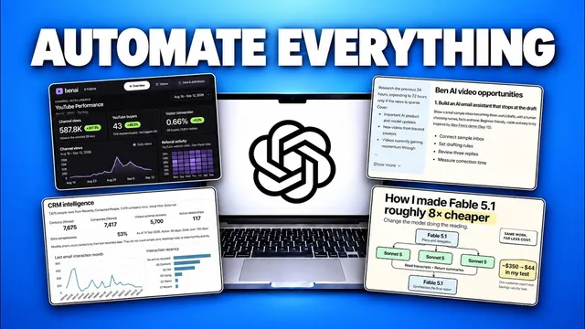

GPT-6 Astra + GPT Work, 판이 바뀐다

원본 영상 보기 →
- "무엇을"보다 "왜"를 설명해야 한다
- 레퍼런스 이미지·링크 하나가 긴 설명보다 강력하다
- 브레인덤프 → 구조화 스킬로 프롬프트 품질을 끌어올릴 수 있다
한 줄 요약
GPT-6(Astra 모델)과 챗GPT Work를 결합하면 프롬프트 한 번으로 인터랙티브 대시보드, 엑셀/구글시트 모델, 조간 브리핑, SNS 인포그래픽, 웹사이트까지 만들 수 있다 — 실제 화면을 보여주며 각 사용법과 프롬프트 짜는 법을 설명한다.
전체 내용 정리
챗GPT Work 시작하는 법과 클로드 코워크와의 차이
이번 영상에서 다루는 기능 중 일부는 챗GPT 데스크톱 앱에서만 작동하므로, 아직 설치하지 않았다면 먼저 데스크톱 앱을 받아야 한다. 드롭다운 메뉴에서 챗GPT를 선택한 뒤 탭을 Chat에서 Work로 전환하면 되고, 새 모델을 쓰려면 GPT-6 Astra를 선택하면 된다. 챗GPT Work는 클로드 코워크(Claude Cowork)의 챗GPT 버전이라고 보면 되는데, 클로드 코워크에는 없는 몇 가지 기능이 있어서 이 기능들 덕분에 새로운 활용법이 가능해진다.
프롬프트 한 번으로 인터랙티브 대시보드 만들기
첫 번째 사례는 유튜브 애널리틱스와 영상별 전환율을 한눈에 보는 인터랙티브 대시보드다. GPT-6는 복잡한 데이터와 디자인을 이해하는 데 특히 강하고, 챗GPT Work의 Sites 플러그인을 쓰면 이런 대시보드를 공유 가능한 형태로 바로 만들 수 있다. 프롬프트는 음성 받아쓰기 도구(WhisperFlow)로 먼저 작업 내용을 명확히 설명하고, 데이터 출처(예: 유튜브 데이터는 VidIQ 플러그인, 전환 데이터는 분석 소프트웨어 Posthog)를 구체적으로 지정한 뒤, 왜 이 대시보드가 필요한지 의도까지 설명하는 방식으로 구성한다. 여기에 더해 Dribbble 같은 사이트에서 마음에 드는 대시보드 디자인을 찾아 스크린샷을 캡처해 붙여넣고 그 스타일을 따라달라고 요청하면 디자인 완성도가 크게 올라간다. 마지막으로 Data Analytics 플러그인과 Sites 플러그인을 추가한 뒤 GPT-6 미디엄 모드로 실행하면 약 7분 만에 원하던 지표(채널 조회수, 유튜브 영상에서 발생한 실제 구매자, 전환율)가 반영된 대시보드가 완성된다. Sites 플러그인으로 만들었기 때문에 워크스페이스 내 누구와도, 또는 링크를 복사해 누구와도 바로 공유할 수 있고, "매일 아침 9시에 최신 데이터로 갱신해줘"라고 요청하면 그 즉시 자동 갱신 스케줄 작업까지 만들어준다.
CRM 데이터로 엑셀·구글시트 모델 만들기
두 번째 사례는 스프레드시트 플러그인을 활용한 엑셀 모델 제작이다. CRM 소프트웨어에서 회사·인물 데이터를 CSV로 내려받아 폴더에 모아두고, 챗GPT Work에서 새 프로젝트를 만들어 그 폴더에 접근 권한을 준다. 이렇게 프로젝트로 묶어두면 이후 그 프로젝트 안에서 여는 어떤 대화에서도 해당 CSV 파일들을 계속 참조할 수 있다. 복잡한 작업을 프롬프트로 정리하는 방법으로는, 먼저 다른 대화에서 음성 도구로 원하는 것을 두서없이 브레인덤프한 뒤, 본인이 직접 만든 "Ben AI Prompt Optimizer" 스킬로 그 브레인덤프를 작업 목표·의도·가드레일·완료 기준이 명시된 구조화된 프롬프트로 변환하는 방식을 쓴다. 비슷한 접근으로 "Interview Me" 스킬은 챗GPT가 먼저 질문을 던져 빈 부분을 채운 뒤 프롬프트를 완성해주는 방식이라, 아직 작업 내용이 명확하지 않을 때 특히 유용하다. 여기에 스프레드시트 플러그인을 더해 프롬프트를 보내면 CSV 데이터를 분석해 그래프, 수식, 활동 시기·예산·관계 강도·회사별 필터까지 갖춘 CRM 인텔리전스 모델을 엑셀과 구글시트 양쪽으로 만들어준다. 완성한 모델은 스프레드시트 플러그인으로 재사용 가능한 템플릿으로 저장할 수도 있고, 반대로 재무 예산, 애널리틱스 대시보드, 운영 캘린더, 프로젝트 트래커, 세일즈 파이프라인 같은 기존 템플릿을 불러와 바로 쓸 수도 있다.
매일 자동으로 오는 조간 브리핑 만들기
세 번째 사례는 GPT-6의 리서치 능력과 스케줄 작업 기능을 결합한 자동 조간 브리핑이다. 매일 아침 자동으로 이메일을 보내, AI 업계 전반의 새 소식과 경쟁사 영상·글 중 성과가 좋은 것들을 팀 전체에 공유하는 방식으로 쓰고 있으며, 이를 위해 수백 개의 X 계정과 유튜브 채널, 인터넷 전반을 훑어 가장 관련성 높은 내용만 골라낸다. 이 방식은 영역을 바꿔서도 쓸 수 있는데, 예컨대 영업팀이라면 이메일함과 CRM을 리서치해 그날의 영업 브리핑을 만들 수도 있다. 프롬프트는 앞서 설명한 브레인덤프+프롬프트 옵티마이저 방식으로 만들었고, 추적할 소스 목록, 본인에 대한 맥락, 적용할 필터 기준, 기대하는 이메일 템플릿 형태 이 네 가지 축으로 구성하면 된다. 이렇게 만든 프롬프트로 HTML 이메일 템플릿을 완성해 초안함에 저장한 뒤 몇 차례 수정을 거쳤고, 이를 매일 자동 발송하기 위해 "매일 오전 10시에 이 과정을 자동으로 실행해서 팀 전체에 이메일을 보내달라"고 요청하면 스케줄 작업 탭에 등록되어 매일 아침 자동으로 새 이메일을 만들어 발송한다.
SNS 포스트·인포그래픽 직접 만들기
네 번째 사례는 챗GPT 안에서 바로 이미지·인포그래픽을 곁들인 SNS 포스트를 만드는 것이다. 클로드와 달리 챗GPT는 새 이미지 생성 모델(GPT 5.2)과 바로 연동되어 있다는 게 차별점이다. 유튜브 영상을 링크드인 포스트로 재가공해주는 자체 제작 "LinkedIn 작성 스킬"을 예로 들었는데, 스킬이란 챗GPT에게 재사용 가능한 지침 세트를 만들어두는 기능으로, 원하는 프로세스를 설명하면 그 자체를 스킬로 패키징해 이후 @스킬명으로 바로 불러 쓸 수 있다. 이 링크드인 스킬에는 과거 작성한 포스트들이 담겨 있어 본인의 어투를 유지하고, 글쓰기 프로세스 자체도 내장돼 있다. 카피라이팅용 스킬을 만들 때 요령은 각 단계마다 여러 선택지를 제시하게 만드는 것으로, 이 사례에서는 포스트의 앵글 선택 → 글쓰기 프레임워크 선택 → 훅 선택 → 최종 초안 작성 순으로 매 단계 옵션 중 하나를 고르는 식으로 진행된다. 포스트가 완성되면 "이 포스트로 인포그래픽을 만들어줘"라고 요청할 수 있는데, 이미 등록해둔 브랜드 스타일과 색상을 자동으로 적용해 포스트 내용을 인포그래픽으로 꽤 잘 정리해준다. 다만 이미지 생성 모델이 대개 그렇듯 몇 차례 수정이 필요한데, 최근 나온 GPT 5.2에서는 이미지를 더블클릭하면 캔버스 뷰가 열려 크기 조정, 특정 요소만 선택해 삭제, 배경 제거, 특정 부분에 코멘트를 남겨 수정 지시하는 것까지 그 화면에서 바로 처리할 수 있다.
레퍼런스 이미지로 웹사이트·랜딩페이지 만들기
다섯 번째 사례는 Sites 플러그인으로 실제 배포 가능한 웹사이트나 랜딩페이지를 몇 분 만에 만드는 것이다. 예시로 든 것은 팀용 세컨드 브레인 앱 "Balder"(Obsidian과 비슷하지만 팀 단위 사용에 있는 한계를 보완한 앱, Balder.com에서 무료로 쓸 수 있다)의 랜딩페이지 리디자인으로, 프롬프트에는 기존 웹사이트 링크와 함께 마음에 드는 디자인의 레퍼런스 웹사이트 링크, 그리고 애플의 리퀴드 글래스(liquid glass) 이펙트와 스크롤 애니메이션 구현 방법이 담긴 깃허브 저장소 링크 두 개를 함께 제공했다. 여기서도 마찬가지로 이 리디자인을 하는 의도를 설명하는 습관을 유지했고, Sites 플러그인을 사용해 완성 즉시 실제 배포된 링크로 팀과 공유할 수 있게 했다. 결과물은 제공한 레퍼런스 사이트의 스타일을 그대로 따라갔을 뿐 아니라, 요청한 리퀴드 글래스 이펙트와 스크롤 애니메이션도 반영됐고, 카드에 마우스를 올렸을 때 나타나는 호버 애니메이션처럼 따로 지시하지 않은 디테일까지 원본 레퍼런스 사이트에서 찾아 그대로 적용했다. 보통은 몇 차례 반복 수정이 필요하지만, 어느 정도 사전 계획을 거친 원샷 프롬프트치고는 상당히 인상적인 결과다.
핵심 인사이트
- "무엇을"보다 "왜"를 설명해야 한다: GPT-6처럼 강력한 모델은 단순히 작업을 지시하는 것보다 그 작업이 왜 필요한지 의도까지 설명해줄 때 결과물의 질이 확연히 좋아진다. 대시보드, 엑셀 모델, 조간 브리핑, 웹사이트까지 이 영상의 모든 사례에서 반복적으로 강조되는 원칙이다.
- 레퍼런스 이미지·링크 하나가 긴 설명보다 강력하다: Dribbble 디자인 캡처, 기존 웹사이트 링크, 심지어 특정 기능을 구현한 깃허브 저장소까지 참조로 던져주면 GPT-6가 스타일·애니메이션·레이아웃을 알아서 재현해낸다. 원하는 결과물을 말로 풀어 설명하는 것보다 실제 예시를 보여주는 쪽이 훨씬 정확하게 전달된다.
- 브레인덤프 → 구조화 스킬로 프롬프트 품질을 끌어올릴 수 있다: 작업이 복잡할수록 음성으로 두서없이 요구사항을 먼저 쏟아낸 뒤, 이를 구조화된 프롬프트로 변환해주는 전용 스킬을 쓰거나 챗GPT가 먼저 질문을 던지게 하는 방식을 쓰면, 불필요한 반복 수정 없이 한 번에 원하는 결과에 훨씬 가까워진다.
오늘 당장 해볼 것
- 챗GPT 데스크톱 앱을 설치하고 Work 탭에서 GPT-6(Astra) 모델을 선택한 뒤, 매일 확인하는 데이터(유튜브 애널리틱스, 세일즈 CRM 등) 하나를 골라 "이 데이터로 대시보드를 만들어줘 + 왜 필요한지"를 함께 담은 프롬프트를 한 번 던져본다.
- 반복적으로 확인하는 정보 소스(경쟁사 유튜브·특정 뉴스 사이트·본인 이메일함 등)를 리스트로 정리해서, 챗GPT Work의 스케줄 작업 기능으로 매일 아침 자동 요약 이메일이 오도록 설정해본다.
- 최근 작성한 콘텐츠(유튜브 스크립트, 블로그 글 등)를 챗GPT에 주고 "이 프로세스를 재사용 가능한 스킬로 만들어줘"라고 요청해, 자주 반복하는 작업(특정 톤의 SNS 포스트 작성 등)을 스킬로 패키징해본다.